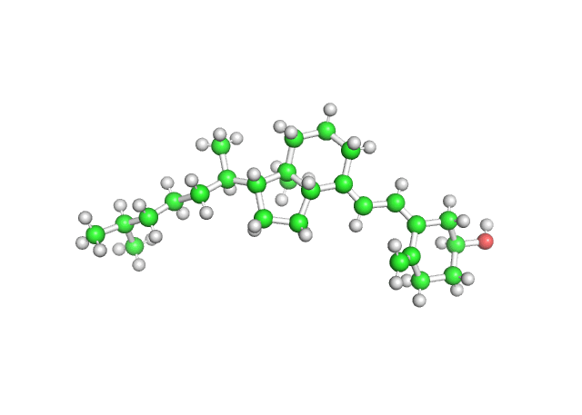

入门教程¶
主要讲述PyMOL中常见的图形界面（鼠标）操作
PyMOL软件界面介绍¶
PyMOL 软件界面如下图所示，主要由2部分组成。第一部分是菜单窗口和第二部分是显示窗口。 PyMOL2 和PyMOL1一个明显区别: 在PyMOL2中，这2部分默认是一个整体，在PyMOL1中这2部分是分开的。 在Display->Toggle Floating 可以拆分这2个窗口，快捷键是Ctrl+E, 刚开始PyMOL的界面主要是通过tkinter实现的，在PyMOL2中逐渐采用PyQT技术实现。 和PyMOL1 相比，PyMOL2 表现能力更强，功能更多，本教程以PyMOL2为例进行讲解，大部分 内容也适用于PyMOL1.
窗口1：整合了PyMOL的各个功能，主要包含如下部分
1.1 菜单窗口 1.2 操作记录显示窗口 1.3 命令输入窗口 1.4 常用命令集成面板
窗口2：分子操作和显示窗口，主要包括如下部分：
2.1 可视化窗口 2.2 命令输入窗口 2.3 分子对象列表窗口 2.4 模式窗口
{kind=link}
Note
本节教程是有顺序的。
PyMOL内置的超强可视化示例¶
打开PyMOL,点击1.1菜单窗口的Wizard菜单，然后点击Demo->Representations 然后在2.3 对象窗口 和 2.4模式窗口之间会出现各种示例：
- Representations
- Cartoon Ribbons
- Roving Detail
- Roving Density
- Transparency
- Ray Tracing
- Sculpting
- Scripted Animation
- Electrostatics
- CGOs
- Molscript/R3D Input
- End Demonstration 关闭示例
从中我选择了几个示例图片展示下：
Fig 1. Representations |
Fig 2. Transparency |
Fig 3. Electrostatics |

Fig 4. R3D |
从这些示例中，我们可以感受到PyMOL的强大表现能力。
设置和查看工作路径¶
点击1.1菜单窗口 File->Working Directory->Change 可以查看现在的工作目录在哪里，也可以设置新的路径作为工作目录。
工作目录的作用：默认文件的打开和保存都是从该文件开始。下载文件的保存位置也是在工作目录。
工作目录设置习惯
- 建议： 1. 不同项目设置不同的工作目录
- 设置一个默认工作目录
- 不要把工作目录设置在软件安装目录
- 双击PDB文件打开PyMOL,会自动切换工作目录到该PDB文件所在目录。
- 从软件安装处打开PyMOL, 则工作目录为软件安装目录
这里我设置工作目录为 D:\PyMOLstartedManual
下载蛋白¶
从PDB网站上下载蛋白，如 4hbk.pdb, 也可以直接通过PyMOL 下载蛋白，点击菜单栏中的 File->Get PDB,如下图图所示, 在PDB ID 对应的框中填入PDB的编号就可以了，不要包含后缀.pdb 。
{kind=link}
点击Download，你会发现PyMOL会自动加载该蛋白，在工作路径 D:\PyMOLstartedManual 下面出现 4hbk.cif 文件，随着PDB解析的结构越来越大，PDB格式文件的局限性就暴露出来，不能超过9999个原子，因此正在逐渐用cif 格式取代pdb 格式。
蛋白的展现形式(show)¶
在2.3对象列表窗口中，我们可以看到现在有2个object 名字，
- 1个是all, all 不是真实的object,它代表了所有的object
- 1个是4hbk, 4hbk 就是我们刚刚载入的蛋白
每个object 都有对应的A S H L C操作,如下图所示：

- Action 主要包含了对object的常用操作的集合，如 复制、删除object,对object加氢，展示Object等，更多详情参见蛋白对象的Action操作。
- Show 将object 渲染成cartoon 、line、stick lines sphere surface mesh dots ribbon 等模式
- Hide 根据object的状态或者描述进行相应的掩藏
- Label 显示object中残基 原子等名称或者属性
- Color 对Object 进行着色
下面对Show 着重讲解： show 有2类操作方法：
- show as 分别点击S->as->cartoon 和S->as->stick,
- 我们可以观察到AS模式是把原有的渲染模式抹除后再重新渲染，经过上述操作后仅仅显示stick形式
- show 点击S->as->cartoon 再点击S->stick;
- 我们可以观察到SHOW方法，是保留原有的渲染，再添加新的渲染。
我们先对4hbk object点击 S->as->cartoon,然后点击S->as->stick,效果如图Fig5
我们先对4hbk object点击 S->as->cartoon,然后点击S->stick,效果如图Fig6
Fig 5. as stick |
Fig 6. stick |
大家可以下载demo1的示例蛋白文件 demo1_pp.pdb，点此 pdb 下载。
然后在PyMOL中点击File -> Open-> demo1_pp.pdb 打开该文件。
- 点击 S->as->lines
- 点击 S->as->sticks
- 点击 S->as->spheres
- 点击 S->as->surface
- 点击 S->as->mesh
- 点击 S->as->dots
- 点击 S->as->ribbon
- 点击 S->as->cartoon
观察该分子对象的不同形态,如图1所示。
蛋白对象的简单平移、旋转、缩放¶
首先将鼠标移动到2.1可视化窗口
- 平移，按住鼠标中键不放，然后上下左右移动，进行体会，蛋白会随着鼠标而移动
- 旋转，按住鼠标左键不放，然后上下左右移动鼠标，蛋白会进行旋转
- 缩放，按住鼠标右键不放，然后上下移动，蛋白会进行缩放
- 切割 滚动鼠标中键， 建议将蛋白渲染成surface模式，然后滚动鼠标中键
当软件不能正常使用上述操作，可以点击
- File->Reinitialize->Original Settings (推荐)
- File->Reinitialize->Everything 注意的是该操作会删除当前所有的Object,
蛋白对象的action操作¶
对于4HBK体系里面没有小分子，一些相互作用操作不方便演示,我会在在后面进行更详细的讲解。
第一部分： 常用显示操作
- 点击 A->preset->simple 显示蛋白的简单形式
- 点击 A->preset->ball and stick 显示球棍模型
效果如下图所示：
{kind=link}
- 点击 A->preset->b-factor putty 基于bfactor数值显示蛋白的柔性
- 点击 A->preset->publication 高质量出版标准
第二部分 对象的操作
- 删除水分子 A->remove waters
- 增加删除氢原子
- 在line和stick 模式下面可以看到H原子，cartoon模式下面看不到氢原子 因此在line或者stick模式下，执行下述操作。
- A->Hydrogens->remove 删除所有氢原子
- A->Hydrogens->add 增加所有氢原子
- A->Hydrogens->remove non polar 删除所有非极性氢原子，我们可以看到C上的氢原子全部被删除
- A->Hydrogens->remove 再次删除所有氢原子
- A->Hydrogens->add polar 增加极性氢原子
第三部分 对象的复制 删除 重命名
- 复制 A->Copy to object->new
- 重命名 obj01-> 4hbk_02
- 对obj01 点击A->rename object
- 删除 A->delete object
查看小分子和蛋白的氢键作用¶
由于4hbk 蛋白中没有小分子，这里我以 PDB id: 为例演示。 点击 A->preset->ligand sites 效果如图所示，其中黄色的虚线就是氢键。
对标注的氢键，查看距离和角度，进一步确定氢键的合理性和强度。
查看小分子和蛋白的相互作用，推荐软件 schrodinger中ligand interaction。 制作相互作用的二维图，根据提示，然后再在pymol确认并绘制这些相互作用。
蛋白对象的Hide操作¶
和remove delete 操作相比，hide操作更加温和， 把不需要的东西暂时掩藏起来，通过Show 可以重现显示出来。 我们先上述方法，构建4hbk 和4hbk_02 两个object， 这一次把4hbk 设置成cyan 颜色的cartoon, 4hbk_02设置成green颜色的ribbon，如图所示。 如果要掩藏4hbk_02,有2种方法 - 对4hbk_02 点击H->ribbOn - 直接点击4hbk_02的名字
{kind=link}
{kind=link}
选择蛋白的特定残基¶
我们通过软件 D3Pockets 可以确定4hbk中口袋中氨基酸残基的组成：
{kind=link}
蛋白对象的着色操作¶
pymol中内置了多种不同的着色方案,如图所示：
按照原子类型着色
点击object上的 C按钮 -> by element
按照二级结构着色
按照b-factor着色
按照整体着色
{kind=link}
{kind=link}
对象的Label操作¶
选择需要Label的对象 | 然后点击对象上的L按钮，根据需要，可以标记残基的名字，原子的名字，范德华半径、元素的名字等。
对于蛋白醛糖还原酶（PDB ID: 4HBK）,我们在UniProt 数据库中查询得到，其口袋中的重要残基有： TYR48、LYS77 和 HIS110。
我们对这三个残基展示其为stick模式,并掩藏主链，并通过label按钮标注其氨基酸残基的名字。 移动Label，使其更加清晰可见。具体操作流程如下:
效果如下图所示：
{kind=link}
测量距离¶
点击菜单栏中的Wizard->Measurement 就可以进行距离测量。然后分别选择两个2个原子就可以显示这2个原子的距离。
比如我们想测定TYR48中侧链上的O原子到Lys77侧链N原子的距离，如下操作即可：
效果如图所示：
{kind=link}
作业：
1. 测定TYR48的α碳原子和LYS77的α碳原子的距离？ 答案是11.6A
默认测定的距离是保留1位小数，如果想要显示2位小数，可点击菜单栏中的Setting->Edit All, 然后搜索label_digits，找到该索引，并把后面的数值设置为2就可以了。如图所示：
{kind=link}
测量角度¶
比如我们想测定Lys77侧链CE、NZ原子和的TYR48中侧链上的O原子的角度，如下操作即可：
效果如图所示：
{kind=link}
测量二面角¶
同测量距离和角度的操作，只需要将测量模式切换为Dihedrals。
测量环的距离¶
同测量距离和角度的操作，只需要将测量模式切换为Dihedrals。
{kind=link}
设置透明度¶
鼠标操作只能基于显示模式进行设置，如：cartoon surface sphere stick等
除了可以设置透明度外，还可以设置透明的方式，有如下几种透明模式：
在Label操作中，我们将整个蛋白展示为cartoon,并将HIS 等3个残基展示为stick模式; 这时候我们设置cartoon为透明50%，用4种不同的透明模式渲染，效果如下：
Fig 1. Uni-layer 透明效果 |
Fig 2. Multi-Layer 透明效果 |
Fig 3. Multi-Layer(real time oit) |

Fig 4. Fast-ugly |
选择模式：¶
根据不同的需求，切换到不同的选择模式，快速选择自己想要的原子：
我们先将蛋白Show->as wire;然后把MET-1第一个氨基酸残基show stick;如图所示，
{kind=link}
我们切换到不同的模式，选择甲硫氨酸上的硫原子。
Fig 1. atoms模式下点击硫原子的效果 |
Fig 2. res模式下点击硫原子 |
Fig 3. chain模式下点击硫原子 |
Fig 4. mol模式下点击硫原子 |
从上图我们也可以看到，不同模式的区别。这里我简单解释下:
保存或者导出结果¶
PyMOL 和 PhotoShop 有点类似，PyMOL中的Object 类似于 PhotoShop中的图层。
- PyMOL 可以将会话保存为pse文件，File->Save Session；pse 文件类似于PS中的psd文件，方便修改调整。
- PyMOL 可以将object 导出为结构文件，File->export molecule，然后从selection的下拉框中选择需要导出的object, all 代表所有的object; enable 代表的可见的object;
- 保存图片，File->export image as->png; 在新版本的，可以使用右上角的Ray/Trace按钮，设置图片大小 分辨率，进行保存图片。
4. 保存动画，File->export movie as->mpeg; PyMOL仅仅内置了 mpeg_encode 编码视频方式，默认只能保存mpg格式的动画。 可自行下载ffmpeg,从而可以保存为多种格式，如gif,mov,mpg等